Another train journey (to Trivandrum) and a visit back (by taxi) to the Padmanabhapuram Palace - once the seat of the rulers of the princely state of Travancore, which included a large part of present-day Kerala and the western coast of Tamil Nadu.
The palace is superbly constructed of local teak and granite and stands within massive stone walls. The oldest parts of the palace date from AD 1550. It was occupied from 1550 until 1790 when the then raja moved to Trivandrum.. !
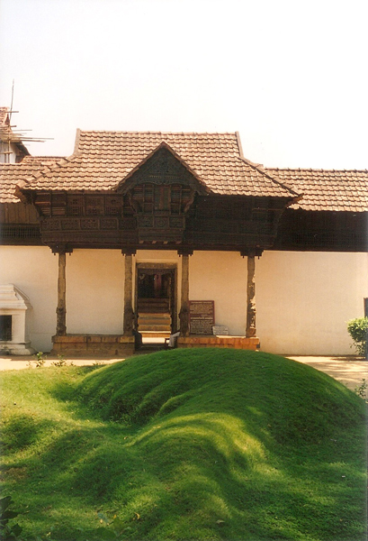
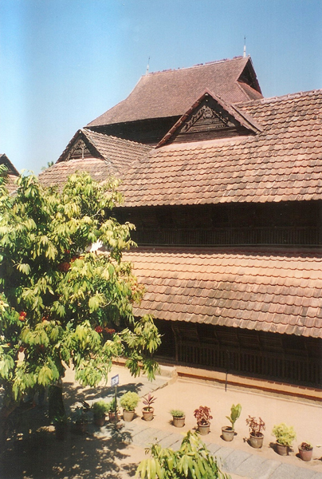
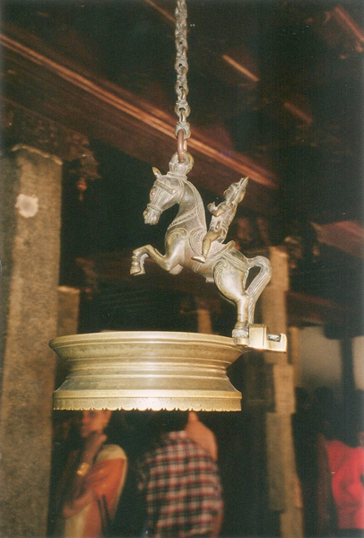
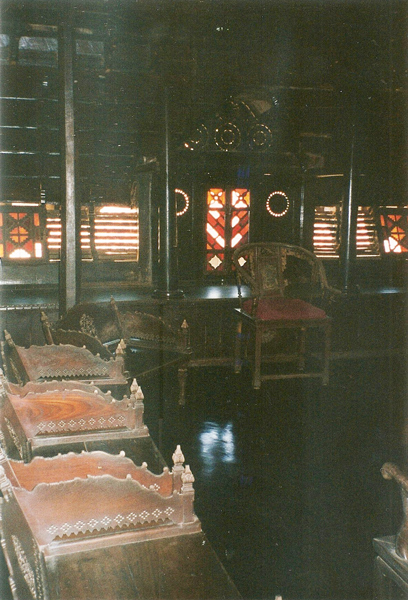
Chinese traders sold tea and bought spice here for centuries and their legacy is evident throughout the palace. There are intricately carved rosewood chairs, screens and ceilings as well as large Chinese pickle jars.. !
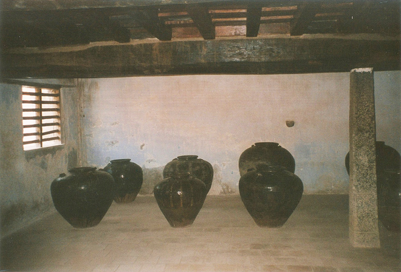
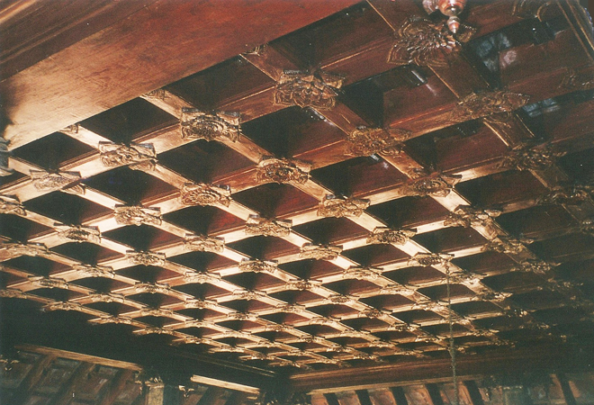
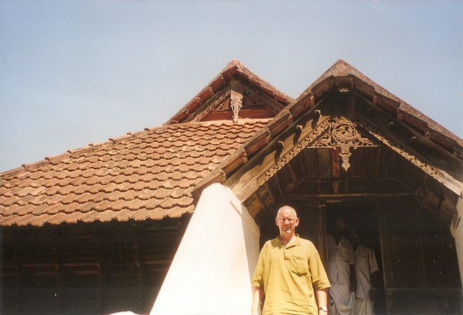
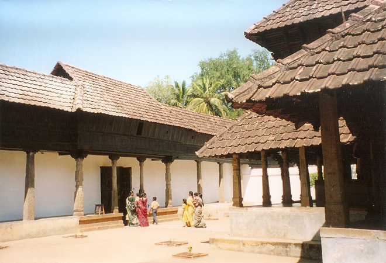
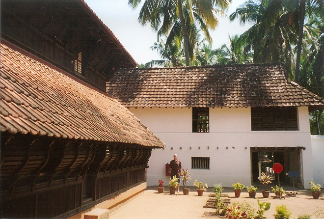
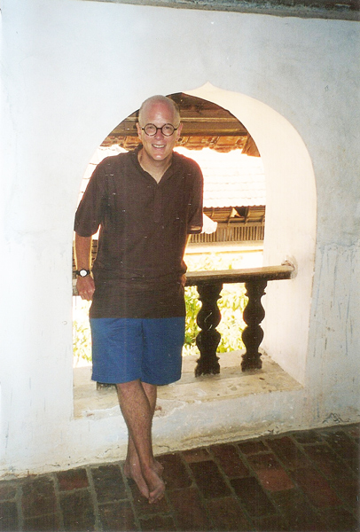
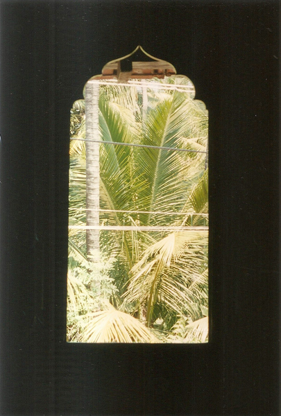
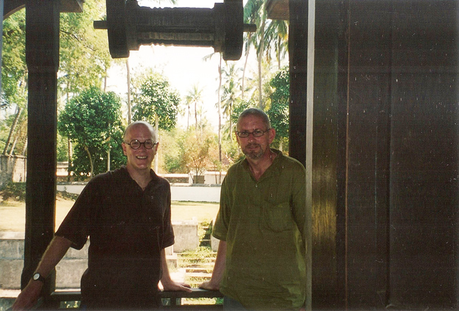
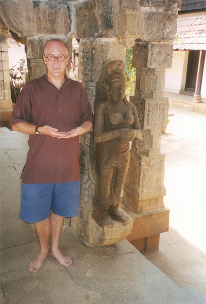
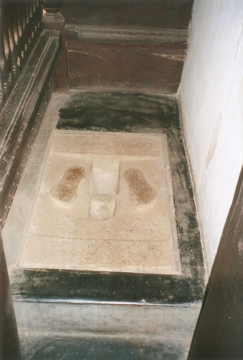
In the associated village, and around its tank, preparations were being made for the Navarathri festival to the local gods which involved the contruction of vast structures (some on wheels). It was unclear (as our taxi driver couldn't tell us) what would happen to these structures - would they be set alight at the end of the festival and how on earth would the ones on wheels be moved? The festival also had something to do with the ritual of handing over the sword of the erstwhile Maharajas of Travancore at the palace and which many devotees would throng to the temple to witness. Clearly one of the "mysteries of the orient" .... !
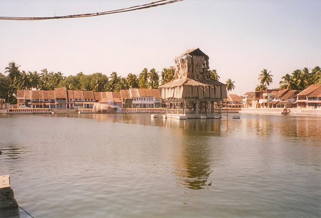
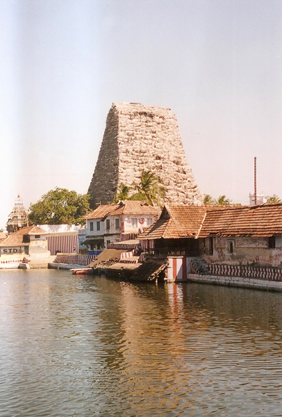
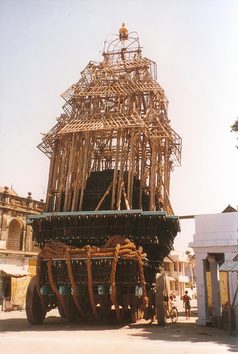
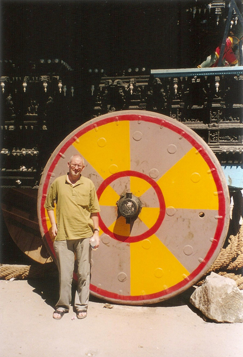